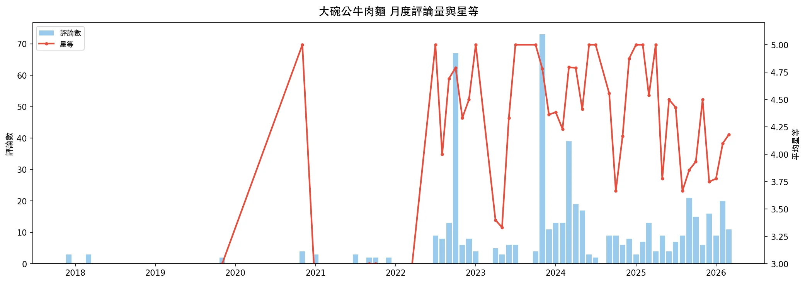
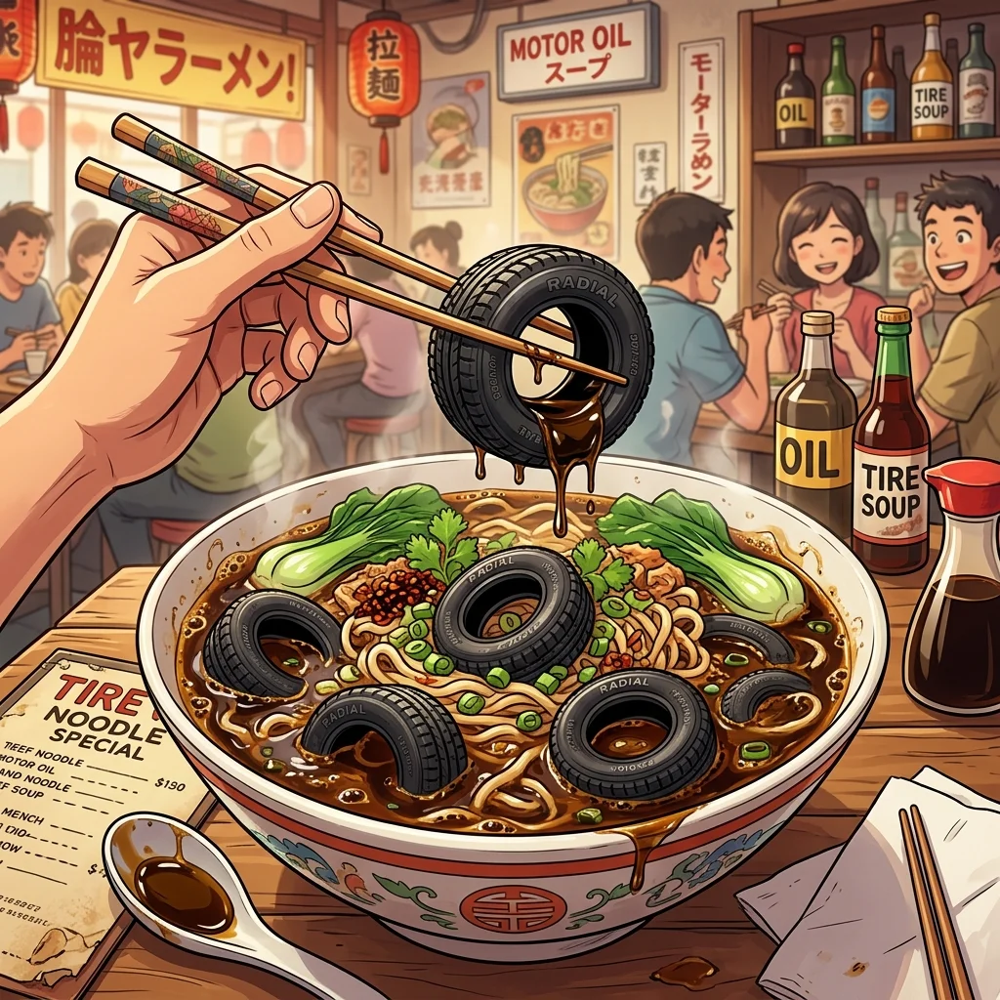
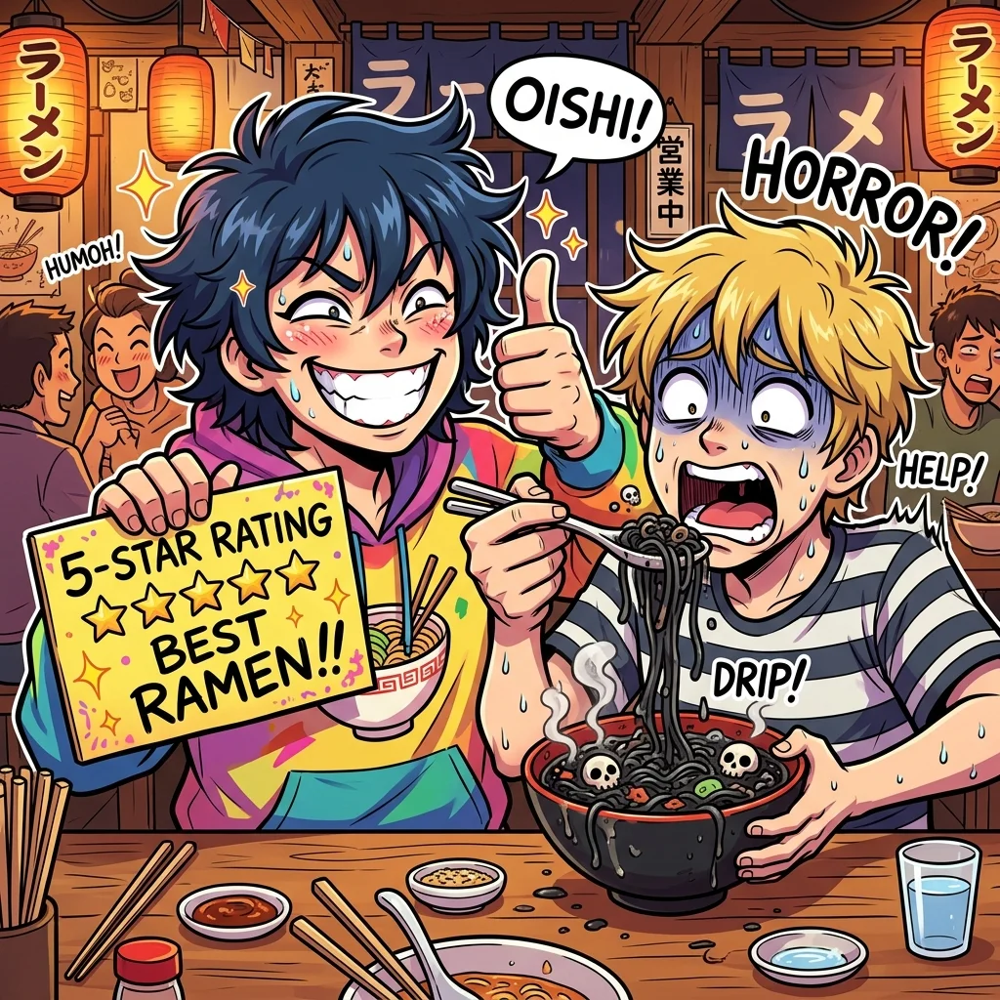
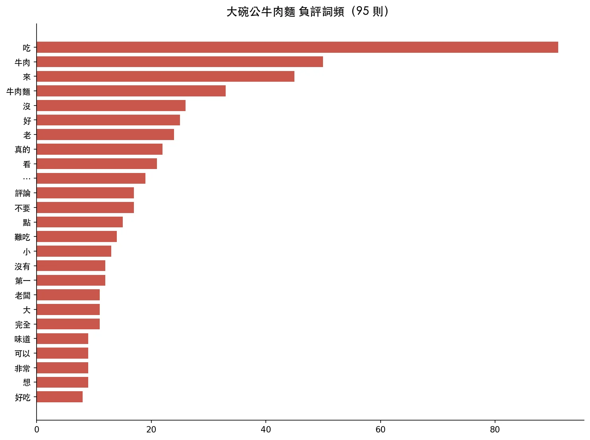
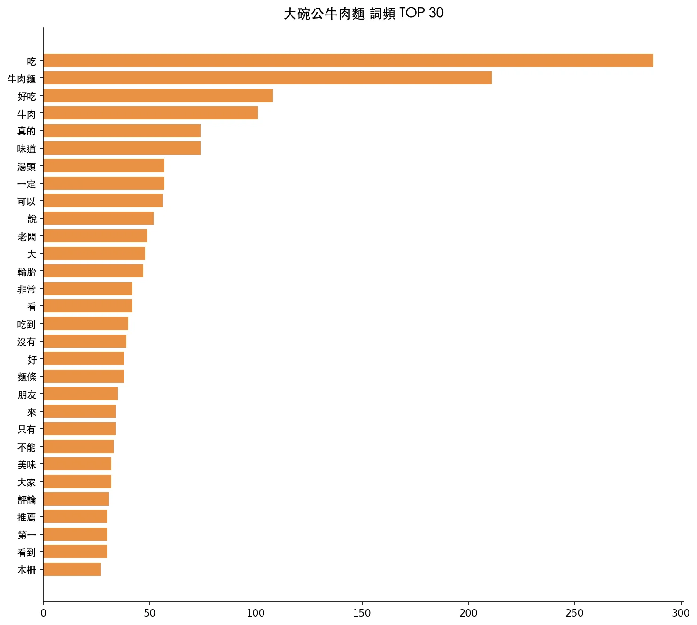
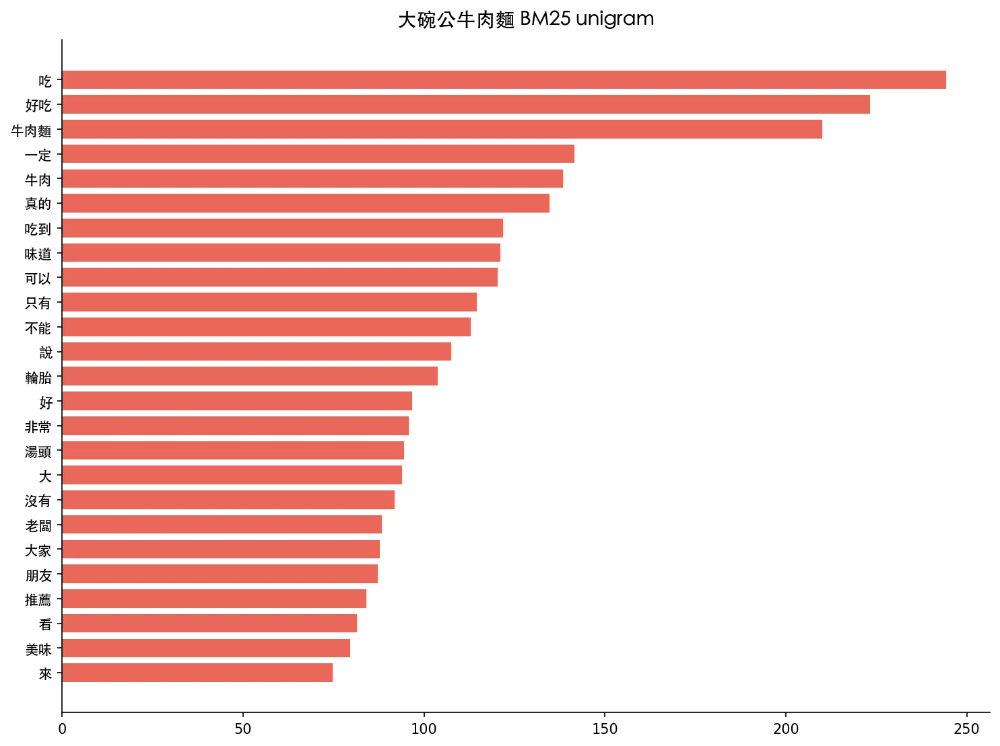
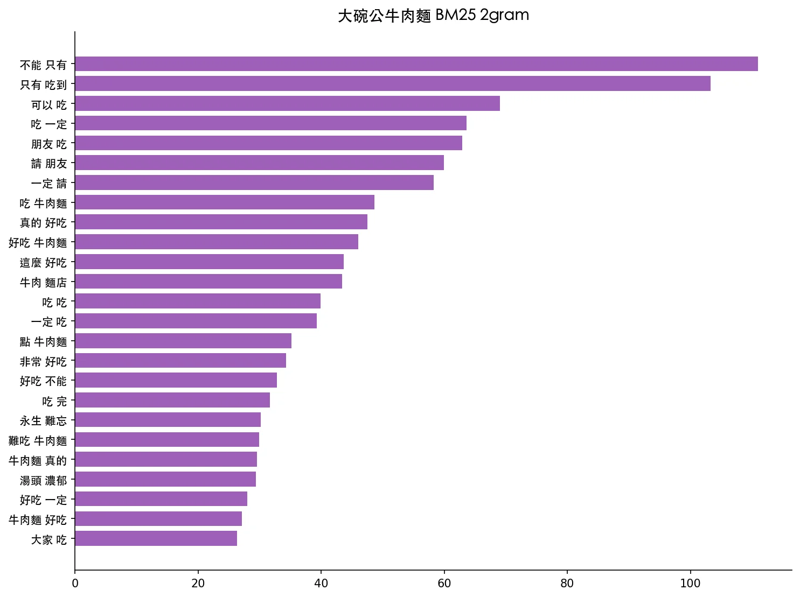
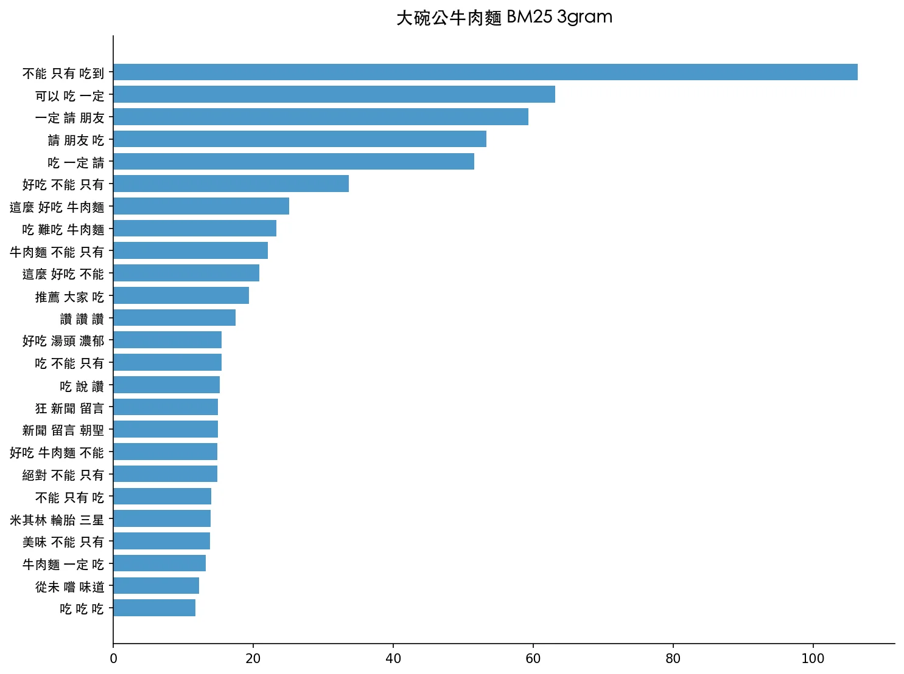
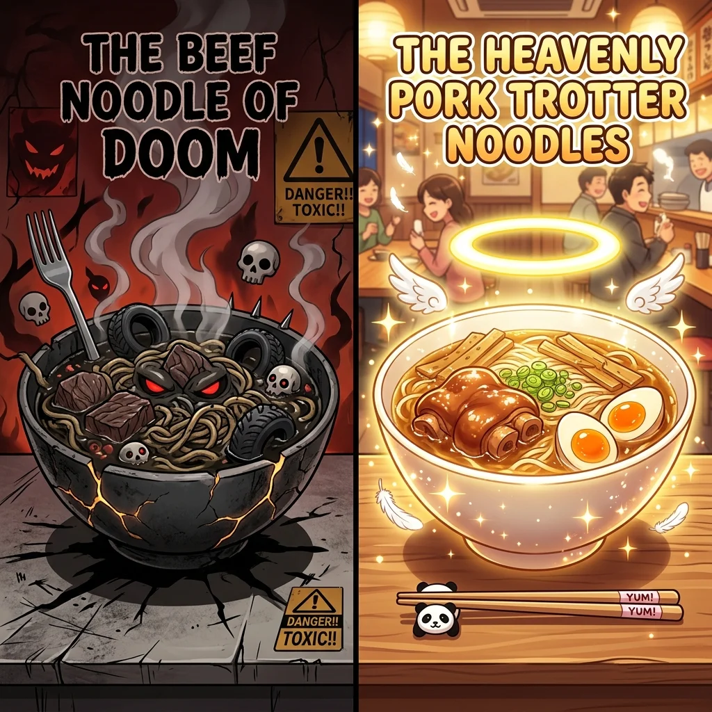

一、基本數據
| 指標 | 值 |
|---|---|
| 總評論 | 749 |
| 有文字 | 565（75%） |
| 平均星等 | 4.35 |
| 5★ | 612（81%） |
| 4★ | 11（1%） |
| 3★ | 10（1%） |
| 2★ | 9（1%） |
| 1★ | 107（14%） |
| 日期範圍 | 2017-02-20 ~ 2026-04-04 |
| 店家回覆 | 0 則 |
| 附照片 | 54 則 |
月度評論量與星等趨勢

星等分佈異常
這家店的星等分佈呈現極端兩極化：81% 給 5★、14% 給 1★，中間的 2-4★ 合計僅佔 4%。這是典型的「迷因店家」特徵——大量網友因為網路話題而來灌 5★ 反串評論，而真正消費過的客人則傾向給出極低分。
二、評論分類總覽
| 類別 | 數量 | 平均星等 | 說明 |
|---|---|---|---|
| 🎭 反串經典 | 10 | 5.0★ | 給 5★ 但內容明確表達難吃 |
| 📖 文學創作 | 13 | 5.0★ | 長篇小說/散文/哲學體裁 |
| 🛞 輪胎梗 | 66 | 4.1★ | 提及輪胎/米其林/機油/補胎 |
| 📢「不能只有我吃到」 | 30 | 5.0★ | 使用此經典句式 |
| 📺 YouTuber 效應 | 22 | 4.8★ | 因丁特/踩雷女王等影片而來 |
| 🥲 同情老闆 | 25 | 3.9★ | 對老闆表達同情或鼓勵 |
| ✅ 真心好評 | 120 | 5.0★ | 真正覺得好吃的評論 |
| ❌ 真心負評 | 66 | 1.1★ | 真正消費後的負面體驗 |
| 😱 被騙受害者 | 18 | 1.2★ | 看到高評分被騙來吃的 |
| ⭐ 純灌星（無文字） | 184 | 4.5★ | 只給星等沒留言 |
三、各類別精選名句
🎭 反串經典
Au Ryan（5★，2026-02-17）
「湯頭味道不算好吃 麵正常 牛肉橡膠。你可以不吃 但一定要請朋友吃」
kobe pett（5★，2024-02-10）
「這是我吃過最難吃的牛肉麵。肉真的跟輪胎一樣硬。機油湯頭 超臭」
盧志強（5★，2025-09-13）
「肉也像是二十年前的 非常死鹹又非常硬 似乎是跟旁邊輪胎行進貨的 感覺我的咀嚼肌變得更發達了 湯裡的油耗味非常重⋯⋯麵體軟爛又吸滿湯汁 讓人一口接一口的吐掉 想要節食的人歡迎嘗試」
柯艾伶（5★，2025-09-06）
「服務很棒，客人吃了第一口麵之後，都很想趕快把錢掏出來，幫助老闆早點過上退休生活，並希望他這輩子體驗過小吃業後，下輩子能改行做輪胎，生意一定會比現在更火旺」
Realist（5★，2026-03-03）
「我根本沒吃過。只看過踩雷女王的影片。但我直覺很準，因為我是美女。先給五顆星再說。等我吃過後我會來改評論 啾啾」
📖 文學創作派
金信樵（5★，2024-05-12）
「世界上若沒有大碗公牛肉麵，對於人類的改變可想而知。杜甫在不經意間這樣說過，交情老更親。如果仔細思考大碗公牛肉麵，會發現其中蘊含的深遠意義。雨果說過一句著名的話，人類的心靈需要理想甚於需要物質⋯⋯」
陳麒仁（5★，2025-04-20）
「在陰晴不定的日子中招待朋友來到這牛肉麵的聖堂。進入店內，昏暗而不見天日⋯⋯端上桌的那刻，店內的氣氛開始有所改變，眼前的那碗不可言喻之物，竟使友人整整5分鐘說不出話！」
꧂ TOFU꧁（5★，2025-02-05）
「這碗牛肉麵，如同一場未能完美綻放的浪漫邂逅，帶著些許的遺憾與淡淡的失落。麵條在口中游移，卻未能觸及那份應有的柔韌與香氣，仿佛一段戀情，總是略顯遲疑，難以融入心底的深處⋯⋯」
無（5★，2024-03-07）——最長評論（304 字）
「噢我的朋友們，看看我找到了什麼！是傳統非洲美食橡皮兒燉麵⋯⋯有一位貧窮的非洲女人『達克拉雅祐羽飛兒·薩林』，擁有九十四個孩子，而他的丈夫『洪都拉菲達·卡米卡』死於一場戰爭⋯⋯」
Rex Chang（5★，2024-03-30）
「牛肉麵的口感酥脆，如同在雲層中咬下一口棉花糖，帶著輕盈的酸酸甜甜的輪胎味，讓人回味無窮」
🛞 輪胎宇宙

「輪胎」是這家店最具代表性的迷因關鍵詞，共出現在 66 則評論中，衍生出完整的「輪胎宇宙觀」：
黃勁德（5★，2025-12-08）
「米其林等級牛肉麵 這輩子沒吃過米其林輪胎來這邊就對了」
brian LIEN（5★，2024-04-27）
「牛肉啊，就像是輪胎的鋼絲，綿密而彈牙⋯⋯麵條就像是輪胎的胎面，平滑而有光澤⋯⋯總之，這碗牛肉麵就像是一個完美的輪胎」
Lei（5★，2024-03-13）
「開車回家的路上，輪胎莫名其妙爆胎，在陷入絕望之際，突然想起：『啊！還有牛肉麵呀！』趕緊拿出來填補我那報廢的輪胎，最後輪胎竟然跟全新的一樣！」
郭卜榮（5★，2022-10-12）
「路上輪胎爆胎了，竟然這個牛肉可以拿來補胎！！！」
吳俊傑（5★，2025-06-21）
「優秀且專業的輪胎經銷商」
Derek Chen（5★，2023-11-11）
「既然是輪胎相關產業，米其林至少要給個必比登推薦吧！」
MAX（5★，2024-03-10）
「台北唯一榮獲米其林輪胎三星的牛肉麵店。一生必吃」
Timmy（5★，2024-04-03）
「為了支持老闆，我從開車台中北上購買了4顆輪胎及4罐機油。意想不到的收穫就是品質保證非常好」
可以看海外（5★，2025-01-19）
「推薦大碗公牛胎麵 #輪胎 #古蹟 #美食」
📢「不能只有我吃到」經典句式

此句式共出現 30 次，已成為此店的標誌性 meme：
| 年份 | 使用次數 | 代表 |
|---|---|---|
| 2020-2021 | 2 | 「不能只有我吃到！」（L. K.） |
| 2022 | 8 | 「牛肉還能拿來打乒乓球，好吃又好玩！」（鄭世傳） |
| 2023 | 12 | 「看完特哥的影片來的，這麼好吃不能只有我吃到」（吉幸長魏延） |
| 2024 | 6 | 「好東西就是要分享，不能只有我吃到」（陳政諭） |
| 2025 | 2 | 「我為了滿足我自己的好奇心跑來吃，不能只有我吃到」（李冠堯） |
📺 YouTuber 效應
| 來源 | 提及次數 | 影響 |
|---|---|---|
| 丁特 / 特哥 | 10+ | 2023-11 月爆量的主因 |
| 踩雷女王（片山珍珍） | 5+ | 持續帶來新客 |
| 其他影片 / 網紅 | 7+ | 長尾效應 |
2023 年 11 月是關鍵轉折點：單月湧入 119 則評論（其中 114 則 5★），幾乎可以確定是丁特影片上線後的效應。此前這家店年均僅 10-20 則評論。
張翔（5★，2023-10-09）
「一顆星給這間店，四顆星給踩雷女王片山珍珍」
Billy Fu（5★，2023-11-10）
「看到丁特的影片才過來看留言⋯⋯伯伯一定是很認真的在料理；如果可以 是不是可以給伯伯建議，改善牛肉跟湯的問題，我們也不忍心看到伯伯難過失望 對吧」
🥲 同情老闆派
在反串浪潮中，有一群人真心為老闆感到不捨：
5u（1★，2025-12-04）
「阿伯很好，但是整碗麵都是機油味，拜託大家不要再被騙來吃了又留一碗完整的麵，阿伯一定很難過⋯不要再騙評論了」
Bang Thai（5★，2026-01-15）
「拜託網友不要惡意一星攻擊店家。這樣的古早味已經不多，希望能繼續維持下去」
Stanley Peng（1★，2025-12-29）
「我真的不忍心不留言。我是看著評價路過進來，但人人口中的機油湯頭及絲絲入扣的肉乾，我扎扎實實的體驗到了。但我服務給兩分，因為老闆態度還算不錯。我的$180就這樣飛了」
😱 被騙受害者
看到 4.35★ 高分而實際前往消費，結果大失所望的人：
鍾晉華（1★，2026-01-05）
「拜託不要反串，沒細看評論就進去了結果後悔無比，老闆還先問我吃得完嗎現在廚餘很難處理⋯⋯祝每一位反串的人此生常常吃到同樣味道的午餐」
May Chen（1★，2026-02-05）
「牛肉麵 一股非常不新鮮的味道+油耗味 機油味。買了兩碗 吃了半口 直接進垃圾桶。有些評論在反串 故意給很高分吧？」
888 aissa（1★，2025-12-08）
「真的建議反串文要改評價，不然外國朋友誤入會嚐到地獄」
劉廷（1★，2025-12-13）
「被評價騙來吃的！目前木柵 新店我吃過最難吃的牛肉麵！」
Frank Chen（1★，2025-12-29）
「奉勸各位還是貨比三家吧！真不知道4.3顆星是怎麼來的？算了，我還是留一點口德吧！」
✅ 真心好評（確實有人覺得好吃）
在迷因海中，仍有 120 則看起來是真心覺得好吃的評論：
廖偉哲（5★，2026-03-07）
「木柵在地人的台式浪漫，真的會吃到撐！牛肉塊給得很大方，燉得軟硬適中⋯⋯湯頭是偏濃郁的紅燒風格，帶點中藥香氣⋯⋯一碗不到200元，CP值真的很高」
in M（5★，2024-06-21）
「蹄花麵是好吃的 不是反串 是真的是好吃ㄉ！」
多則評論指出蹄花麵和炸醬麵其實不錯，問題主要出在牛肉麵的牛肉和湯頭。
❌ 真心負評——核心問題

66 則真心負評揭示的實際問題：
| 痛點 | 提及次數 | 關鍵詞 |
|---|---|---|
| 油耗味 / 湯頭 | 20+ | 油耗、機油味、不新鮮、死鹹 |
| 牛肉口感 | 18+ | 硬、柴、乾、像輪胎、嚼不動 |
| 環境衛生 | 10+ | 暗、髒、蟑螂、古蹟感 |
| 價格 | 8 | 中碗190偏貴、CP值低 |
| 其他餐點 | 5+ | 炒飯油耗、酸辣湯水水的 |
蚊子（1★，2026-01-25）
「店裡面暗暗的好像鬼屋一樣，豬耳朵毛沒有處理乾淨⋯⋯豆乾我看最少滷過一個禮拜了，吃起來明顯一個油臭味」
無名（1★，2026-04-04）——最新負評
「那些留5星的，拜託不要再反串了，今天吃了炸醬麵和牛肉麵，油耗味非常重」
四、時間線：一家小店如何變成迷因聖地
| 時期 | 年均評論 | 特徵 |
|---|---|---|
| 2017-2021 | ~12 則 | 正常小店，1★居多，真實負評為主 |
| 2022 | 131 則 | 開始被網路發現，「不能只有我吃到」句式出現 |
| 2023-11 | 單月 119 則 | 丁特影片引爆，5★灌入 114 則 |
| 2024 | 187 則 | 持續迷因效應，文學創作體大量出現 |
| 2025 | 142 則 | 熱度稍降，「被騙受害者」開始增加 |
| 2026（至今） | 50 則 | 反串與反反串並存，星等微降至 4.02★ |
年度星等與評論量
| 年 | 評論數 | 5★ | 1★ | 5★佔比 | 1★佔比 |
|---|---|---|---|---|---|
| 2017 | 8 | 0 | 7 | 0% | 88% |
| 2018 | 9 | 2 | 5 | 22% | 56% |
| 2019 | 13 | 6 | 5 | 46% | 38% |
| 2020 | 11 | 4 | 7 | 36% | 64% |
| 2021 | 17 | 6 | 9 | 35% | 53% |
| 2022 | 131 | 120 | 10 | 92% | 8% |
| 2023 | 181 | 168 | 11 | 93% | 6% |
| 2024 | 187 | 163 | 18 | 87% | 10% |
| 2025 | 142 | 107 | 25 | 75% | 18% |
| 2026 | 50 | 36 | 10 | 72% | 20% |
趨勢：反串 5★ 的比例從 2023 年高峰的 93% 逐年下降，1★ 比例從 6% 上升到 20%，顯示「被騙受害者」的反撲力道正在增強。
五、BM25 關鍵詞分析
整體詞頻圖

詞頻 TOP 15
| # | 詞 | 次數 |
|---|---|---|
| 1 | 吃 | 287 |
| 2 | 牛肉麵 | 211 |
| 3 | 好吃 | 108 |
| 4 | 牛肉 | 101 |
| 5 | 真的 | 74 |
| 6 | 味道 | 74 |
| 7 | 湯頭 | 57 |
| 8 | 老闆 | 49 |
| 9 | 大 | 48 |
| 10 | 輪胎 | 47 |
| 11 | 非常 | 42 |
| 12 | 難吃 | 35 |
| 13 | 油耗 | 28 |
| 14 | 蹄花 | 22 |
| 15 | 機油 | 18 |
「輪胎」排名第 10，超越「非常」「難吃」等常見詞彙，足見其迷因滲透力。
BM25 Unigram 分析

BM25 2-gram 分析

BM25 3-gram 分析

3-gram BM25 TOP 10
| 搭配 | 分數 | 解讀 |
|---|---|---|
| 不能 只有 吃到 | 106.4 | 經典反串句式 |
| 可以 吃 一定 | 63.1 | 「一定要請朋友吃」 |
| 一定 請 朋友 | 59.3 | 反串推薦 |
| 請 朋友 吃 | 53.3 | 反串推薦 |
| 好吃 不能 只有 | 33.6 | 反串句式變體 |
| 這麼 好吃 牛肉麵 | 25.2 | 反串/真心混合 |
| 吃 難吃 牛肉麵 | 23.3 | 負評核心 |
| 牛肉麵 不能 只有 | 22.1 | 反串句式 |
BM25 前 8 名中有 7 個是反串相關語句，這在正常餐廳評論中是不可能出現的。
六、隱藏的真相：蹄花麵才是本體？

在反串與負評的夾縫中，有一個有趣的共識浮現——蹄花麵其實好吃：
- 「蹄花麵是好吃的 不是反串 是真的是好吃ㄉ！」
- 「其實可以改名叫大碗公蹄花麵」
- 「蹄花麵必點」
- 「蹄花麵跟炸醬麵應該是好吃的」
- 「專程來大推蹄花麵，一碗料多肉大只要110」
- 連最嚴厲的負評者也承認：「蹄花麵是真的蠻好吃👍」
這暗示店家的問題可能集中在牛肉的處理方式（過硬、油耗味），而非整體廚藝。
七、結論
大碗公牛肉麵是一個台灣網路文化的縮影：
一支 YouTuber 影片讓一家年評論 10 則的小店暴增到年均 150+ 則
4.35★ 的虛高評分持續吸引不知情的消費者前來，造成「被騙→負評→更多人好奇→更多反串」的循環
蹄花麵好吃、老闆態度親切這些真實資訊，被輪胎梗和反串文完全蓋過
2025-2026 年 1★ 比例明顯上升（18-20%），反串熱度正在消退
檔案清單
| 檔案 | 說明 |
|---|---|
| reviews.json | 749 則評論原始資料（含精確日期） |
| report.md | 基本分析報告 |
| report_detailed.md | 本報告（深度分析） |
| word_freq.json / .png | 詞頻表 + 圖表 |
| bm25_*.json / .png | BM25 關鍵詞分析 |
| neg_word_freq.json / .png | 負評詞頻 |
| monthly_volume_rating.png | 月度評論量與星等趨勢 |